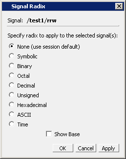

You can
set the signal radix for a selected signal or signals in the Objects
window as follows.
Procedure
- Click
(LMB) a signal to select it or use Ctrl-Click Shift-Click to select
a group of signals.
- Choose from
the menu bar; or right-click the selected signal(s) and choose Radix from the popup menu.
This opens the
Signal Radix dialog box (Figure 1), where you may select a radix. This sets
the radix for the selected signal(s) in the Objects window and every
other window where the signal appears.
Figure 1. Setting the Global
Signal Radix from the Objects Window